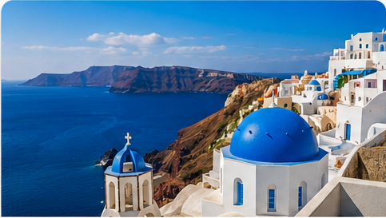

Travel

There's a particular kind of silence you find only in Greece — not the silence of emptiness, but the silence of accumulated time. Standing at the edge of a cliff in Zakynthos, watching the turquoise water carve itself against white limestone, I understood for the first time what it means to be small in a beautiful way.
I went to Greece thinking I was going on a food trip. I came back understanding something much harder to name. Day one: arriving hungry My flight landed in Athens at 6am. The city was still half-asleep, and the first thing I did — before hotel, before shower — was find a bakery. Tiropita, still warm from the oven, eaten standing on a pavement in the pale early light. That was the moment I knew this trip was going to be different. "Food in Greece isn't a meal, it's an argument. Every taverna owner believes their grandmother invented the recipe, and honestly, they might be right." The markets in Athens are nothing like what you expect. Yes, there are olives — stacked in barrels, dozens of varieties, each with its own personality. But what gets you is the pace. Nobody rushes. The man behind the cheese counter has been cutting the same feta for thirty years and he will tell you exactly why that matters, in Greek, whether you understand it or not. The islands change everything Taking the ferry from Piraeus to Santorini is an exercise in patience and, eventually, surrender. The sea is vast and indifferent and after two hours you stop checking your phone. By hour four you've accepted that you're simply a small object moving slowly across a large blue surface, and that this is fine.Santorini's food is overpriced and the views are, frankly, absurd. Oia at sunset feels like someone turned the saturation up past what reality permits. But the best meal I had there wasn't at a clifftop restaurant — it was a paper plate of grilled octopus from a fisherman who had a cooler and a portable grill and absolutely no menu.
Greece taught me that slowness is a skill. That a two-hour lunch is not laziness — it's a practice. That food tastes different when it arrives without urgency, when the person who made it sat down at the table next to you and is also eating.
I came home with olive oil, dried herbs, and a determination to stop eating lunch at my desk. I've managed one of those three things consistently.